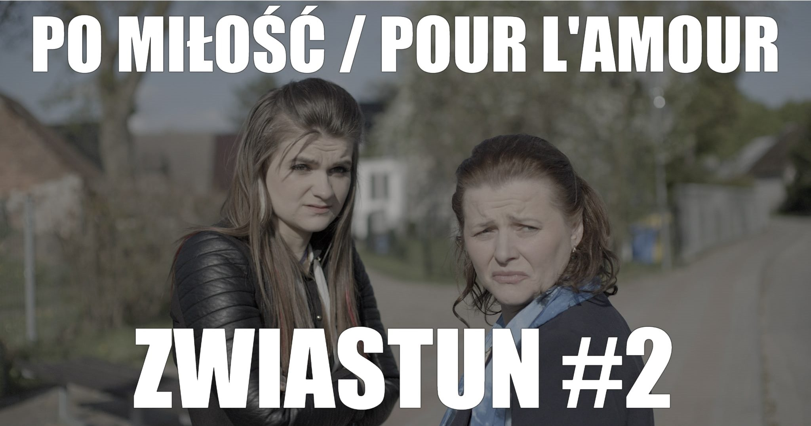
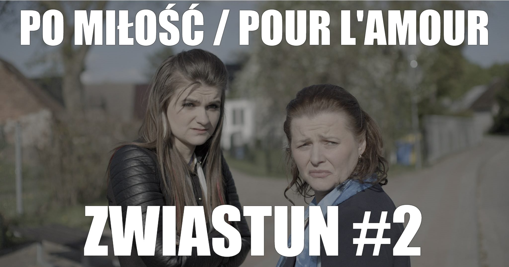

- Link do profilu na portalu
HOP! Media
- * HOP! Media to filmowa firma produkcyjna założona przez Beatę Hrycyk-Mańkowską
- * istniejemy od 2010 r.
- * specjalizujemy się w realizacji filmów fabularnych, dokumentalnych, reportaży i reklam
- * rozwijamy pomysły i scenariusze
- * organizujemy ekipy realizatorów i plany zdjęciowe
- * zapewniamy i nadzorujemy postprodukcję
FILM
- PO MIŁOŚĆ / POUR L'AMOUR
- film fabularny
- 91 min. 2021
- scen. i reż. Andrzej Mańkowski
 

REPORTAŻ
- ZWYCZAJNA RODZINA
- 10 min. 2022
- real. Andrzej Mańkowski
- CZYM JEST MIŁOŚĆ
- 10 min. 2022
- real. Andrzej Mańkowski

REKLAMA
- SIETOM - lider środowiska dokumentów
- BLEPHASOL - film promocyjny

KONTAKT
BEATA HRYCYK-MAŃKOWSKA

- Producentka filmowa i kierowniczka produkcji.
- Każdy projekt filmowy potrafi doskonale zorganizować
- i sprawnie przeprowadzić przez wszystkie etapy realizacji.
- Zawsze odpowiada na mejle i telefony.
- Zawsze dotrzymuje terminów płatności.
- e-mail: hopmedia.mankowska@gmail.com
- mob. +48 602373725